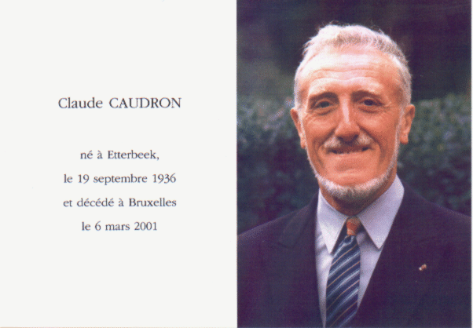

In memoriam
Claude Caudron

« Les vagues d’Ostende »
De golven van Oostende — The Ostend waves
opus 38 · December 1997–1998
A neo-romantic composition for piano
dedicated to the memory of Claude Caudron.
Close this window to return to the website.